|
Ses3d-NT
simulation of elastic wave propagation in spherical sections
|
This module provides a fundamental Ses3d-NT class which is used for recording and adding observables. It covers recorders, sources and volume snapshots. More...
Data Types | |
| type | channel_cls |
| A class which handles different channels in Ses3d-NT to: More... | |
| interface | channel_container |
| A container class ... not the very best approach. More... | |
| type | channel_exx |
| To record theta-theta component strain. More... | |
| type | channel_exy |
| To record theta-phi component strain. More... | |
| type | channel_exz |
| To record theta-r component strain. More... | |
| type | channel_eyy |
| To record phi-phi component strain. More... | |
| type | channel_eyz |
| To record phi-r component strain. More... | |
| type | channel_ezz |
| To record r-r component strain. More... | |
| type | channel_fx |
| To add or record theta-component monopole force sources. More... | |
| type | channel_fy |
| To add or record phi-component monopole force sources. More... | |
| type | channel_fz |
| To add or record radial-component monopole forces. More... | |
| type | channel_mxx |
| To add or record theta-theta-direction dipole force sources. More... | |
| type | channel_mxy |
| To add or record theta-phi-direction dipole force sources. More... | |
| type | channel_mxz |
| To add or record theta-r-direction dipole force sources. More... | |
| type | channel_myy |
| To add or record phi-phi-direction dipole force sources. More... | |
| type | channel_myz |
| To add or record phi-r-direction dipole force sources. More... | |
| type | channel_mzz |
| To add or record rr-direction dipole force sources. More... | |
| type | channel_n |
| To record the north-component of the displacement velocity. More... | |
| type | channel_pressure |
| To record hydrostatic pressure rate. More... | |
| type | channel_rot_vx |
| To record the curls theta-component of displacement velocity. More... | |
| type | channel_rot_vy |
| To record the curls phi-component of displacement velocity. More... | |
| type | channel_rot_vz |
| To record the curls radial-component of displacement velocity. More... | |
| type | channel_unknown |
| An object of class channel_unknown will be instantiated if something goes wrong e.g. the channel attribute is unknown. More... | |
| type | channel_vx |
| To record the theta-component of the displacement velocity. More... | |
| type | channel_vy |
| To record the phi-component of the displacement velocity. More... | |
| type | channel_vz |
| To record the radial-component of the displacement velocity. More... | |
Functions/Subroutines | |
| elemental type(channel_container) function | construct_channel_container_receiver (attribute) |
| pure type(channel_container) function | construct_channel_container_source (attribute, data) |
| elemental logical function | unknown (self) |
| Returns .TRUE. if channel name is unknown. More... | |
| elemental character(len=8) function | attribute (self) |
| Returns the channel name. More... | |
| pure real(real_kind) function, dimension(size(self%channel%data)) | data (self) |
| Returns the channel's data section. More... | |
| elemental subroutine | record (self, it, point) |
| Records the current value of the desired channel into the data section at timestep/position 'it'. More... | |
| subroutine | add (self, it, point) |
| Adds to field. More... | |
| pure real(real_kind) function, dimension(1+config%nx_loc(), 1+config%ny_loc(), 1+config%ny_loc(), 1+config%lpd(), 1+config%lpd(), 1+config%lpd()) | field (self) |
| Returns current field. More... | |
| elemental logical function | equal_channels (c1, c2) |
Compares two objects c1 and c2 of class channel_container. In case these objects are equal .TRUE. is returned otherwise .FALSE.. More... | |
| pure subroutine | record_vx (self, it, vanderm, ex, ey, ez) |
| Records the displacement velocities' theta component at timestep it. More... | |
| pure real(real_kind) function, dimension(0:config%nx_loc(), 0:config%ny_loc(), 0:config%nz_loc(), 0:config%lpd(), 0:config%lpd(), 0:config%lpd()) | field_vx () |
| Returns the current theta component of the displacement field. More... | |
| pure subroutine | record_n (self, it, vanderm, ex, ey, ez) |
| pure subroutine | record_vy (self, it, vanderm, ex, ey, ez) |
| Records the displacement velocities' phi component at timestep it. More... | |
| pure real(real_kind) function, dimension(0:config%nx_loc(), 0:config%ny_loc(), 0:config%nz_loc(), 0:config%lpd(), 0:config%lpd(), 0:config%lpd()) | field_vy () |
| Returns the current phi component of the displacement field. More... | |
| pure subroutine | record_vz (self, it, vanderm, ex, ey, ez) |
| Records the displacement velocities' r component at timestep it. More... | |
| pure real(real_kind) function, dimension(0:config%nx_loc(), 0:config%ny_loc(), 0:config%nz_loc(), 0:config%lpd(), 0:config%lpd(), 0:config%lpd()) | field_vz () |
| Returns the current r component of the displacement field. More... | |
| pure subroutine | record_rot_vx (self, it, vanderm, ex, ey, ez) |
| Records the curl of the displacement-velocity in theta direction. More... | |
| pure real(real_kind) function, dimension(0:config%nx_loc(), 0:config%ny_loc(), 0:config%nz_loc(), 0:config%lpd(), 0:config%lpd(), 0:config%lpd()) | field_rot_vx () |
| Returns the theta component of the curl of the displacement field. More... | |
| pure subroutine | record_rot_vy (self, it, vanderm, ex, ey, ez) |
| Records the curl of the displacement-velocity in phi direction. More... | |
| pure real(real_kind) function, dimension(0:config%nx_loc(), 0:config%ny_loc(), 0:config%nz_loc(), 0:config%lpd(), 0:config%lpd(), 0:config%lpd()) | field_rot_vy () |
| Returns the phi component of the curl of the displacement field. More... | |
| pure subroutine | record_rot_vz (self, it, vanderm, ex, ey, ez) |
| Records the curl of the displacement-velocity in r direction. More... | |
| pure real(real_kind) function, dimension(0:config%nx_loc(), 0:config%ny_loc(), 0:config%nz_loc(), 0:config%lpd(), 0:config%lpd(), 0:config%lpd()) | field_rot_vz () |
| Returns the r component of the curl of the displacement field. More... | |
| pure subroutine | record_pressure (self, it, vanderm, ex, ey, ez) |
| Records pressure rate. More... | |
| pure real(real_kind) function, dimension(0:config%nx_loc(), 0:config%ny_loc(), 0:config%nz_loc(), 0:config%lpd(), 0:config%lpd(), 0:config%lpd()) | field_pressure () |
| Returns field of pressure rate. More... | |
| pure subroutine | record_nothing (self, it, vanderm, ex, ey, ez) |
| Does simply nothing. More... | |
| subroutine | add_nothing (self, it, vanderm, ex, ey, ez) |
| Does simply nothing. More... | |
| pure real(real_kind) function, dimension(0:config%nx_loc(), 0:config%ny_loc(), 0:config%nz_loc(), 0:config%lpd(), 0:config%lpd(), 0:config%lpd()) | field_nothing () |
| Returns an empty field. More... | |
| subroutine | add_mxx (self, it, vanderm, ex, ey, ez) |
| pure subroutine | record_mxx (self, it, vanderm, ex, ey, ez) |
| subroutine | add_mxy (self, it, vanderm, ex, ey, ez) |
| pure subroutine | record_mxy (self, it, vanderm, ex, ey, ez) |
| subroutine | add_mxz (self, it, vanderm, ex, ey, ez) |
| pure subroutine | record_mxz (self, it, vanderm, ex, ey, ez) |
| subroutine | add_myy (self, it, vanderm, ex, ey, ez) |
| pure subroutine | record_myy (self, it, vanderm, ex, ey, ez) |
| subroutine | add_myz (self, it, vanderm, ex, ey, ez) |
| pure subroutine | record_myz (self, it, vanderm, ex, ey, ez) |
| subroutine | add_mzz (self, it, vanderm, ex, ey, ez) |
| pure subroutine | record_mzz (self, it, vanderm, ex, ey, ez) |
| pure subroutine | record_fx (self, it, vanderm, ex, ey, ez) |
| Records the field fx which corresponds to the source signature of a a monopole force acting in theta direction. More... | |
| subroutine | add_fx (self, it, vanderm, ex, ey, ez) |
| pure subroutine | record_fy (self, it, vanderm, ex, ey, ez) |
| Records the field fy which corresponds to the source signature of a a monopole force acting in phi direction. More... | |
| subroutine | add_fy (self, it, vanderm, ex, ey, ez) |
| pure subroutine | record_fz (self, it, vanderm, ex, ey, ez) |
| Records the field fz which corresponds to the source signature of a a monopole force acting in r direction. More... | |
| subroutine | add_fz (self, it, vanderm, ex, ey, ez) |
| pure real(real_kind) function, dimension(0:config%nx_loc(), 0:config%ny_loc(), 0:config%nz_loc(), 0:config%lpd(), 0:config%lpd(), 0:config%lpd()) | field_exx () |
| Returns theta-theta strain. More... | |
| pure real(real_kind) function, dimension(0:config%nx_loc(), 0:config%ny_loc(), 0:config%nz_loc(), 0:config%lpd(), 0:config%lpd(), 0:config%lpd()) | field_exy () |
| Returns theta-phi strain. More... | |
| pure real(real_kind) function, dimension(0:config%nx_loc(), 0:config%ny_loc(), 0:config%nz_loc(), 0:config%lpd(), 0:config%lpd(), 0:config%lpd()) | field_exz () |
| Returns theta-r strain. More... | |
| pure real(real_kind) function, dimension(0:config%nx_loc(), 0:config%ny_loc(), 0:config%nz_loc(), 0:config%lpd(), 0:config%lpd(), 0:config%lpd()) | field_eyy () |
| Returns phi-phi strain. More... | |
| pure real(real_kind) function, dimension(0:config%nx_loc(), 0:config%ny_loc(), 0:config%nz_loc(), 0:config%lpd(), 0:config%lpd(), 0:config%lpd()) | field_eyz () |
| Returns phi-r strain. More... | |
| pure real(real_kind) function, dimension(0:config%nx_loc(), 0:config%ny_loc(), 0:config%nz_loc(), 0:config%lpd(), 0:config%lpd(), 0:config%lpd()) | field_ezz () |
| Returns r-r strain. More... | |
This module provides a fundamental Ses3d-NT class which is used for recording and adding observables. It covers recorders, sources and volume snapshots.
| subroutine channel_mod::add | ( | class(channel_container), intent(in) | self, |
| integer, intent(in) | it, | ||
| type(point_cls), intent(in) | point | ||
| ) |
| subroutine channel_mod::add_fx | ( | class(channel_fx), intent(in) | self, |
| integer, intent(in) | it, | ||
| real(real_kind), dimension(lpd(config)+1,lpd(config)+1,lpd(config)+1), intent(in) | vanderm, | ||
| integer, intent(in) | ex, | ||
| integer, intent(in) | ey, | ||
| integer, intent(in) | ez | ||
| ) |
Definition at line 1023 of file channel_mod.f90.
| subroutine channel_mod::add_fy | ( | class(channel_fy), intent(in) | self, |
| integer, intent(in) | it, | ||
| real(real_kind), dimension(lpd(config)+1,lpd(config)+1,lpd(config)+1), intent(in) | vanderm, | ||
| integer, intent(in) | ex, | ||
| integer, intent(in) | ey, | ||
| integer, intent(in) | ez | ||
| ) |
Definition at line 1055 of file channel_mod.f90.
| subroutine channel_mod::add_fz | ( | class(channel_fz), intent(in) | self, |
| integer, intent(in) | it, | ||
| real(real_kind), dimension(lpd(config)+1,lpd(config)+1,lpd(config)+1), intent(in) | vanderm, | ||
| integer, intent(in) | ex, | ||
| integer, intent(in) | ey, | ||
| integer, intent(in) | ez | ||
| ) |
Definition at line 1087 of file channel_mod.f90.
|
private |
Definition at line 859 of file channel_mod.f90.
| subroutine channel_mod::add_mxy | ( | class(channel_mxy), intent(in) | self, |
| integer, intent(in) | it, | ||
| real(real_kind), dimension(lpd(config)+1,lpd(config)+1,lpd(config)+1), intent(in) | vanderm, | ||
| integer, intent(in) | ex, | ||
| integer, intent(in) | ey, | ||
| integer, intent(in) | ez | ||
| ) |
Definition at line 883 of file channel_mod.f90.
| subroutine channel_mod::add_mxz | ( | class(channel_mxz), intent(in) | self, |
| integer, intent(in) | it, | ||
| real(real_kind), dimension(lpd(config)+1,lpd(config)+1,lpd(config)+1), intent(in) | vanderm, | ||
| integer, intent(in) | ex, | ||
| integer, intent(in) | ey, | ||
| integer, intent(in) | ez | ||
| ) |
Definition at line 907 of file channel_mod.f90.
| subroutine channel_mod::add_myy | ( | class(channel_myy), intent(in) | self, |
| integer, intent(in) | it, | ||
| real(real_kind), dimension(lpd(config)+1,lpd(config)+1,lpd(config)+1), intent(in) | vanderm, | ||
| integer, intent(in) | ex, | ||
| integer, intent(in) | ey, | ||
| integer, intent(in) | ez | ||
| ) |
Definition at line 931 of file channel_mod.f90.
| subroutine channel_mod::add_myz | ( | class(channel_myz), intent(in) | self, |
| integer, intent(in) | it, | ||
| real(real_kind), dimension(lpd(config)+1,lpd(config)+1,lpd(config)+1), intent(in) | vanderm, | ||
| integer, intent(in) | ex, | ||
| integer, intent(in) | ey, | ||
| integer, intent(in) | ez | ||
| ) |
Definition at line 955 of file channel_mod.f90.
| subroutine channel_mod::add_mzz | ( | class(channel_mzz), intent(in) | self, |
| integer, intent(in) | it, | ||
| real(real_kind), dimension(lpd(config)+1,lpd(config)+1,lpd(config)+1), intent(in) | vanderm, | ||
| integer, intent(in) | ex, | ||
| integer, intent(in) | ey, | ||
| integer, intent(in) | ez | ||
| ) |
Definition at line 979 of file channel_mod.f90.
|
private |
Does simply nothing.
| self | A channel_cls object; usually passed as the dummy object |
| it | Current timestep; Position in data array |
| vanderm | The Vandermonde matrix used for interpolation |
| ex | Element index in theta direction it |
| ex | Element index in phi direction it |
| ex | Element index in r direction it |
Definition at line 841 of file channel_mod.f90.
|
private |
Returns the channel name.
Definition at line 414 of file channel_mod.f90.
|
private |
Definition at line 270 of file channel_mod.f90.
|
private |
Definition at line 344 of file channel_mod.f90.
|
private |
Returns the channel's data section.
Definition at line 421 of file channel_mod.f90.
|
private |
Compares two objects c1 and c2 of class channel_container. In case these objects are equal .TRUE. is returned otherwise .FALSE..
| c1 | Passed-object dummy of class channel_container |
| c2 | Passed-object dummy of class channel_container |
Definition at line 483 of file channel_mod.f90.
| pure real(real_kind) function, dimension(1+config%nx_loc(), 1+config%ny_loc(), 1+config%ny_loc(), 1+config%lpd(), 1+config%lpd(), 1+config%lpd() ) channel_mod::field | ( | class(channel_container), intent(in) | self | ) |
Returns current field.
Definition at line 459 of file channel_mod.f90.
| pure real(real_kind) function, dimension(0:config%nx_loc(),0:config%ny_loc(), 0:config%nz_loc(),0:config%lpd(), 0:config%lpd(),0:config%lpd()) channel_mod::field_exx |
Returns theta-theta strain.
Definition at line 1104 of file channel_mod.f90.
| pure real(real_kind) function, dimension(0:config%nx_loc(),0:config%ny_loc(), 0:config%nz_loc(),0:config%lpd(), 0:config%lpd(),0:config%lpd()) channel_mod::field_exy |
Returns theta-phi strain.
Definition at line 1121 of file channel_mod.f90.
| pure real(real_kind) function, dimension(0:config%nx_loc(),0:config%ny_loc(), 0:config%nz_loc(),0:config%lpd(), 0:config%lpd(),0:config%lpd()) channel_mod::field_exz |
Returns theta-r strain.
Definition at line 1137 of file channel_mod.f90.
| pure real(real_kind) function, dimension(0:config%nx_loc(),0:config%ny_loc(), 0:config%nz_loc(),0:config%lpd(), 0:config%lpd(),0:config%lpd()) channel_mod::field_eyy |
Returns phi-phi strain.
Definition at line 1151 of file channel_mod.f90.
| pure real(real_kind) function, dimension(0:config%nx_loc(),0:config%ny_loc(), 0:config%nz_loc(),0:config%lpd(), 0:config%lpd(),0:config%lpd()) channel_mod::field_eyz |
Returns phi-r strain.
Definition at line 1168 of file channel_mod.f90.
| pure real(real_kind) function, dimension(0:config%nx_loc(),0:config%ny_loc(), 0:config%nz_loc(),0:config%lpd(), 0:config%lpd(),0:config%lpd()) channel_mod::field_ezz |
Returns r-r strain.
Definition at line 1183 of file channel_mod.f90.
|
private |
Returns an empty field.
Definition at line 849 of file channel_mod.f90.
| pure real(real_kind) function, dimension(0:config%nx_loc(),0:config%ny_loc(), 0:config%nz_loc(),0:config%lpd(), 0:config%lpd(),0:config%lpd()) channel_mod::field_pressure |
Returns field of pressure rate.
Definition at line 804 of file channel_mod.f90.
| pure real(real_kind) function, dimension(0:config%nx_loc(),0:config%ny_loc(), 0:config%nz_loc(),0:config%lpd(), 0:config%lpd(),0:config%lpd()) channel_mod::field_rot_vx |
Returns the theta component of the curl of the displacement field.
Definition at line 643 of file channel_mod.f90.
| pure real(real_kind) function, dimension(0:config%nx_loc(),0:config%ny_loc(), 0:config%nz_loc(),0:config%lpd(), 0:config%lpd(),0:config%lpd()) channel_mod::field_rot_vy |
Returns the phi component of the curl of the displacement field.
Definition at line 701 of file channel_mod.f90.
| pure real(real_kind) function, dimension(0:config%nx_loc(),0:config%ny_loc(), 0:config%nz_loc(),0:config%lpd(), 0:config%lpd(),0:config%lpd()) channel_mod::field_rot_vz |
Returns the r component of the curl of the displacement field.
Definition at line 765 of file channel_mod.f90.
| pure real(real_kind) function, dimension(0:config%nx_loc(),0:config%ny_loc(), 0:config%nz_loc(),0:config%lpd(), 0:config%lpd(),0:config%lpd()) channel_mod::field_vx |
Returns the current theta component of the displacement field.
Definition at line 518 of file channel_mod.f90.
| pure real(real_kind) function, dimension(0:config%nx_loc(),0:config%ny_loc(), 0:config%nz_loc(),0:config%lpd(), 0:config%lpd(),0:config%lpd()) channel_mod::field_vy |
Returns the current phi component of the displacement field.
Definition at line 558 of file channel_mod.f90.
| pure real(real_kind) function, dimension(0:config%nx_loc(),0:config%ny_loc(), 0:config%nz_loc(),0:config%lpd(), 0:config%lpd(),0:config%lpd()) channel_mod::field_vz |
Returns the current r component of the displacement field.
Definition at line 584 of file channel_mod.f90.
|
private |
Records the current value of the desired channel into the data section at timestep/position 'it'.
| self | An object of class channel_container |
| it | Current timestep; Position in data array |
| point | A point_mod::point_cls object |
Definition at line 433 of file channel_mod.f90.
| pure subroutine channel_mod::record_fx | ( | class(channel_fx), intent(inout) | self, |
| integer, intent(in) | it, | ||
| real(real_kind), dimension(lpd(config)+1,lpd(config)+1,lpd(config)+1), intent(in) | vanderm, | ||
| integer, intent(in) | ex, | ||
| integer, intent(in) | ey, | ||
| integer, intent(in) | ez | ||
| ) |
Records the field fx which corresponds to the source signature of a a monopole force acting in theta direction.
| self | A channel_fz object; usually passed as the dummy object |
| it | Current timestep; Position in data array |
| vanderm | The Vandermonde matrix used for interpolation |
| ex | Element index in theta direction it |
| ex | Element index in phi direction it |
| ex | Element index in r direction it |
Definition at line 1013 of file channel_mod.f90.
| pure subroutine channel_mod::record_fy | ( | class(channel_fy), intent(inout) | self, |
| integer, intent(in) | it, | ||
| real(real_kind), dimension(lpd(config)+1,lpd(config)+1,lpd(config)+1), intent(in) | vanderm, | ||
| integer, intent(in) | ex, | ||
| integer, intent(in) | ey, | ||
| integer, intent(in) | ez | ||
| ) |
Records the field fy which corresponds to the source signature of a a monopole force acting in phi direction.
| self | A channel_fz object; usually passed as the dummy object |
| it | Current timestep; Position in data array |
| vanderm | The Vandermonde matrix used for interpolation |
| ex | Element index in theta direction it |
| ex | Element index in phi direction it |
| ex | Element index in r direction it |
Definition at line 1045 of file channel_mod.f90.
| pure subroutine channel_mod::record_fz | ( | class(channel_fz), intent(inout) | self, |
| integer, intent(in) | it, | ||
| real(real_kind), dimension(lpd(config)+1,lpd(config)+1,lpd(config)+1), intent(in) | vanderm, | ||
| integer, intent(in) | ex, | ||
| integer, intent(in) | ey, | ||
| integer, intent(in) | ez | ||
| ) |
Records the field fz which corresponds to the source signature of a a monopole force acting in r direction.
| self | A channel_fz object; usually passed as the dummy object |
| it | Current timestep; Position in data array |
| vanderm | The Vandermonde matrix used for interpolation |
| ex | Element index in theta direction it |
| ex | Element index in phi direction it |
| ex | Element index in r direction it |
Definition at line 1077 of file channel_mod.f90.
| pure subroutine channel_mod::record_mxx | ( | class(channel_mxx), intent(inout) | self, |
| integer, intent(in) | it, | ||
| real(real_kind), dimension(lpd(config)+1,lpd(config)+1,lpd(config)+1), intent(in) | vanderm, | ||
| integer, intent(in) | ex, | ||
| integer, intent(in) | ey, | ||
| integer, intent(in) | ez | ||
| ) |
Definition at line 871 of file channel_mod.f90.
| pure subroutine channel_mod::record_mxy | ( | class(channel_mxy), intent(inout) | self, |
| integer, intent(in) | it, | ||
| real(real_kind), dimension(lpd(config)+1,lpd(config)+1,lpd(config)+1), intent(in) | vanderm, | ||
| integer, intent(in) | ex, | ||
| integer, intent(in) | ey, | ||
| integer, intent(in) | ez | ||
| ) |
Definition at line 895 of file channel_mod.f90.
| pure subroutine channel_mod::record_mxz | ( | class(channel_mxz), intent(inout) | self, |
| integer, intent(in) | it, | ||
| real(real_kind), dimension(lpd(config)+1,lpd(config)+1,lpd(config)+1), intent(in) | vanderm, | ||
| integer, intent(in) | ex, | ||
| integer, intent(in) | ey, | ||
| integer, intent(in) | ez | ||
| ) |
Definition at line 919 of file channel_mod.f90.
| pure subroutine channel_mod::record_myy | ( | class(channel_myy), intent(inout) | self, |
| integer, intent(in) | it, | ||
| real(real_kind), dimension(lpd(config)+1,lpd(config)+1,lpd(config)+1), intent(in) | vanderm, | ||
| integer, intent(in) | ex, | ||
| integer, intent(in) | ey, | ||
| integer, intent(in) | ez | ||
| ) |
Definition at line 943 of file channel_mod.f90.
| pure subroutine channel_mod::record_myz | ( | class(channel_myz), intent(inout) | self, |
| integer, intent(in) | it, | ||
| real(real_kind), dimension(lpd(config)+1,lpd(config)+1,lpd(config)+1), intent(in) | vanderm, | ||
| integer, intent(in) | ex, | ||
| integer, intent(in) | ey, | ||
| integer, intent(in) | ez | ||
| ) |
Definition at line 967 of file channel_mod.f90.
| pure subroutine channel_mod::record_mzz | ( | class(channel_mzz), intent(inout) | self, |
| integer, intent(in) | it, | ||
| real(real_kind), dimension(lpd(config)+1,lpd(config)+1,lpd(config)+1), intent(in) | vanderm, | ||
| integer, intent(in) | ex, | ||
| integer, intent(in) | ey, | ||
| integer, intent(in) | ez | ||
| ) |
Definition at line 991 of file channel_mod.f90.
| pure subroutine channel_mod::record_n | ( | class(channel_n), intent(inout) | self, |
| integer, intent(in) | it, | ||
| real(real_kind), dimension(lpd(config)+1,lpd(config)+1,lpd(config)+1), intent(in) | vanderm, | ||
| integer, intent(in) | ex, | ||
| integer, intent(in) | ey, | ||
| integer, intent(in) | ez | ||
| ) |
Definition at line 532 of file channel_mod.f90.
| pure subroutine channel_mod::record_nothing | ( | class(channel_cls), intent(inout) | self, |
| integer, intent(in) | it, | ||
| real(real_kind), dimension(lpd(config)+1,lpd(config)+1,lpd(config)+1), intent(in) | vanderm, | ||
| integer, intent(in) | ex, | ||
| integer, intent(in) | ey, | ||
| integer, intent(in) | ez | ||
| ) |
Does simply nothing.
| self | A channel_cls object; usually passed as the dummy object |
| it | Current timestep; Position in data array |
| vanderm | The Vandermonde matrix used for interpolation |
| ex | Element index in theta direction it |
| ex | Element index in phi direction it |
| ex | Element index in r direction it |
Definition at line 826 of file channel_mod.f90.
| pure subroutine channel_mod::record_pressure | ( | class(channel_pressure), intent(inout) | self, |
| integer, intent(in) | it, | ||
| real(real_kind), dimension(lpd(config)+1,lpd(config)+1,lpd(config)+1), intent(in) | vanderm, | ||
| integer, intent(in) | ex, | ||
| integer, intent(in) | ey, | ||
| integer, intent(in) | ez | ||
| ) |
Records pressure rate.
| self | A channel_pressure object; usually passed as the dummy object |
| it | Current timestep; Position in data array |
| vanderm | The Vandermonde matrix used for interpolation |
| ex | Element index in theta direction it |
| ex | Element index in phi direction it |
| ex | Element index in r direction it |
Definition at line 788 of file channel_mod.f90.
| pure subroutine channel_mod::record_rot_vx | ( | class(channel_rot_vx), intent(inout) | self, |
| integer, intent(in) | it, | ||
| real(real_kind), dimension(lpd(config)+1,lpd(config)+1,lpd(config)+1), intent(in) | vanderm, | ||
| integer, intent(in) | ex, | ||
| integer, intent(in) | ey, | ||
| integer, intent(in) | ez | ||
| ) |
Records the curl of the displacement-velocity in theta direction.
In spherical coordinates the curl's theta (i.e.) x component of a vector-field v reads as
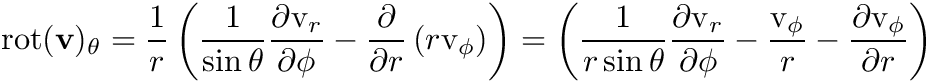
with 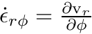 and 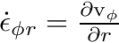 it follows
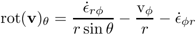
| self | A channel_rot_vx object; usually passed as the dummy object |
| it | Current timestep; Position in data array |
| vanderm | The Vandermonde matrix used for interpolation |
| ex | Element index in theta direction it |
| ex | Element index in phi direction it |
| ex | Element index in r direction it |
Definition at line 620 of file channel_mod.f90.
| pure subroutine channel_mod::record_rot_vy | ( | class(channel_rot_vy), intent(inout) | self, |
| integer, intent(in) | it, | ||
| real(real_kind), dimension(lpd(config)+1,lpd(config)+1,lpd(config)+1), intent(in) | vanderm, | ||
| integer, intent(in) | ex, | ||
| integer, intent(in) | ey, | ||
| integer, intent(in) | ez | ||
| ) |
Records the curl of the displacement-velocity in phi direction.
In spherical coordinates the curl's phi (i.e. y) component of a vector-field v reads as
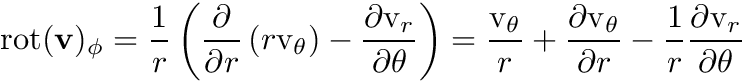
with 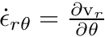 and 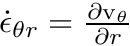 it follows
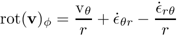
| self | A channel_rot_vy object; usually passed as the dummy object |
| it | Current timestep; Position in data array |
| vanderm | The Vandermonde matrix used for interpolation |
| ex | Element index in theta direction it |
| ex | Element index in phi direction it |
| ex | Element index in r direction it |
Definition at line 679 of file channel_mod.f90.
| pure subroutine channel_mod::record_rot_vz | ( | class(channel_rot_vz), intent(inout) | self, |
| integer, intent(in) | it, | ||
| real(real_kind), dimension(lpd(config)+1,lpd(config)+1,lpd(config)+1), intent(in) | vanderm, | ||
| integer, intent(in) | ex, | ||
| integer, intent(in) | ey, | ||
| integer, intent(in) | ez | ||
| ) |
Records the curl of the displacement-velocity in r direction.
In spherical coordinates the curl's r (i.e. z) component of a vector-field v reads as
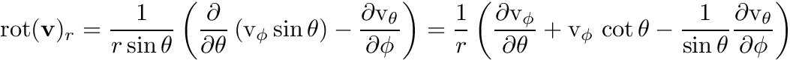
with 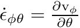 and 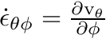 it follows
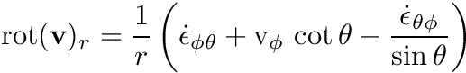
| self | A channel_rot_vz object; usually passed as the dummy object |
| it | Current timestep; Position in data array |
| vanderm | The Vandermonde matrix used for interpolation |
| ex | Element index in theta direction it |
| ex | Element index in phi direction it |
| ex | Element index in r direction it |
Definition at line 742 of file channel_mod.f90.
|
private |
Records the displacement velocities' theta component at timestep it.
Definition at line 505 of file channel_mod.f90.
| pure subroutine channel_mod::record_vy | ( | class(channel_vy), intent(inout) | self, |
| integer, intent(in) | it, | ||
| real(real_kind), dimension(lpd(config)+1,lpd(config)+1,lpd(config)+1), intent(in) | vanderm, | ||
| integer, intent(in) | ex, | ||
| integer, intent(in) | ey, | ||
| integer, intent(in) | ez | ||
| ) |
Records the displacement velocities' phi component at timestep it.
Definition at line 547 of file channel_mod.f90.
| pure subroutine channel_mod::record_vz | ( | class(channel_vz), intent(inout) | self, |
| integer, intent(in) | it, | ||
| real(real_kind), dimension(lpd(config)+1,lpd(config)+1,lpd(config)+1), intent(in) | vanderm, | ||
| integer, intent(in) | ex, | ||
| integer, intent(in) | ey, | ||
| integer, intent(in) | ez | ||
| ) |
Records the displacement velocities' r component at timestep it.
Definition at line 573 of file channel_mod.f90.
|
private |
Returns .TRUE. if channel name is unknown.
Definition at line 400 of file channel_mod.f90.